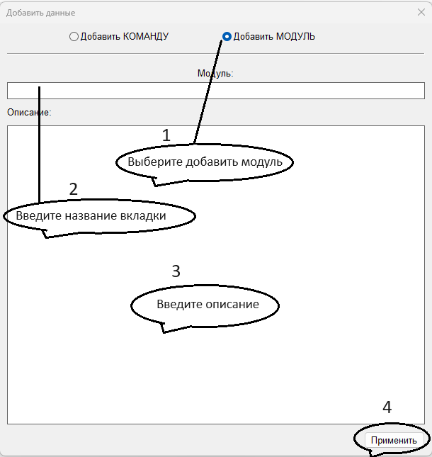
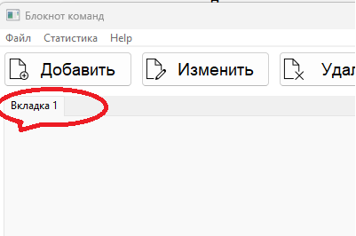
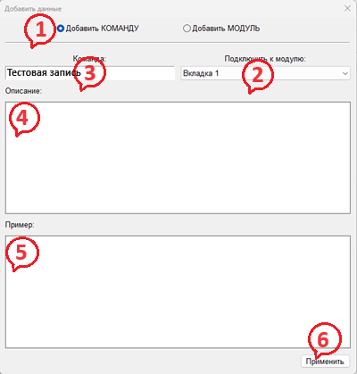
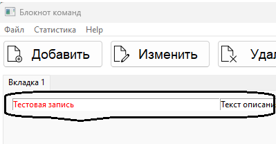

Вас приветствует приложение Блокнот-команд.
Это приложение блокнот модулей и команд.
На данный момент БД программы пустая и вы видите эту страницу с документацией.
Давайте я немного проясню как это приложение работает.
Главная страница с данными выглядит так:
Как создавать вкладки


Как добавлять команды в вкладки Это так же просто:


Вы можете:
- Добавлять вкладки.
- Удалять вкладки и все её содержимое.
- Добавлять записи в вкладки.
- Удалить конкретную запись.
- Поиск записи по названию.
- Подробный просмотр записи.
Если что-то пошло не так, вы можете обновить интерфейс,
нажав на кнопку - "Обновить центральную панель"
В низу этого окна есть две кнопки:
1. Восстановить БД - запишет заводскую БД для языка PYTHON.
2. Очистить БД - очистит БД от всех данных.